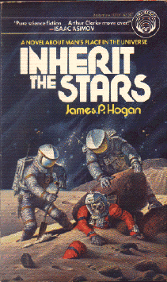

Inherit the Starsby James P. Hogan
publisher: Del Rey
Fiction, 216 pages | 
(book cover art, Copyright ©1977 James Patrick Hogan)
Used with Permission. |
Return to the Book MenuPrevious|Next
Description:
When a space expedition to the moon uncovers a well-preserved
human corpse in an unfamiliar space suit, it raises eyebrows. When that
human is discovered to be 50,000 years old, it begins an investigation
that makes mankind rethink their place in the universe. A scientific mystery
with lots of twists and turns, this is the first book in a trilogy.
Recommended for: Mystery lovers, space enthusiasts,
biologists, astronomers, and people who love a good mystery.
Did-you-read questions:
Deadline: February 1, 2005.
These should be easy questions, but you should have the questions ready and keep an eye out during your reading. Each question should be answered with 1-2 sentences.
Note: these questions are not probably not the most important part of the book! Your essay will not have to cover these questions!
- What is the name the modern scientists give to the ancient astronaut found
on the moon?
- What is the name of the evolutionary biologist who is very set in his ways?
- What is found on one of Jupiter's moons?
- Where did the fish come from, originally?
- What is the significance of Pluto in this novel?
Report Questions:Deadline: Peer Review Session on February 8, 2005; paper due February 10, 2005.
You should write a 3 - 4 page essay on one of the following questions. Your essay should include examples and references to the book, unless otherwise specified. Page number references are sufficient for citing material from the primary book. If you use outside materials, cite your sources in full. If you would rather write on a different topic, you may, but clear it with Mr. Howe or Ms. Sullivan first.
- What do you think about the final theories put forth by Doctor Hunt and
Doctor Danchekker? Are they reasonable? How well do they fit the evidence
of the book and "real life"?
- This book was written over 20 years ago, and contains a lot of predictions
about life in "the future." To what extent are these predictions accurate,
inaccurate, or yet to be determined?
- In many ways, this book is about the scientific method. Describe some of
the good science and the bad science that is found in this book.
- What is the significance of the title of the book? Describe two or three
interpretations of the title, in context of the ideas and events in the
book.
Graphic and Presentation:
Deadline: February 21 - March 3, 2005.You will give a 10 minute presentation on both of the following:
- Convince your peers that they should (or should not) read this book. (This may include a brief summary of the book.) Give examples of what was cool or worthwhile in the book, and what you got out of it (or didn't).
- Describe a (realistic) science idea that you learned about in this book, citing information from at least 2 external sources (other than the dictionary). If you would like help choosing or understanding an idea from your book, you are invited to come talk to Mr. Howe or Ms. Sullivan.
Note: This presentation should not be just a reading of your paper!Along with this presentation, you should have a graphic that will go with it. A Power Point presentation is recommended, but if you have a special idea for a something else, such as a model, an original video presentation, or a well done drawing/ painting/ sculpture/ etc., you may do so, provided it involves a similar level of effort and polish. Speak to Mr. Howe or Ms. Sullivan first if you are considering an alternate graphic format to the Power Point.
Return to the Book MenuPrevious|Next